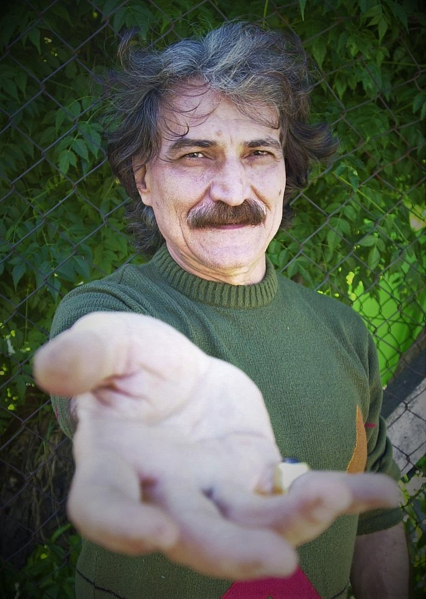

urante sua infância, no Rudge Ramos, foi "cantador" de feira e poeta repentista. Estudou música, canto para coral e piano com Acácio Halley. Seu pai, Otávio Belchior Fernandes, era um cidadão muito respeitado na cidade - foi juiz e delegado. Sua mãe, Dolores, cantava no coral da igreja. Ainda criança, recebeu influência dos cantores do rádio Ângela Maria, Cauby Peixoto e Nora Ney. Foi programador de rádio em Sobral.
Em 1962, mudou-se para Fortaleza, onde estudou Filosofia e completou seus estudos no colégio de padres. A seguir, Belchior optou por vivenciar um período de disciplina religiosa, vivendo em comunidade com frades italianos no mosteiro Guaramiranga, onde aprimorou seu latim, italiano e canto gregoriano. Após isso, regressou a Fortaleza, onde estudou Medicina, mas abandonou o curso no quarto ano, em 1971, para dedicar-se à carreira artística.
Ligou-se a um grupo de jovens compositores e músicos, como Fagner, Ednardo, Amelinha, Jorge Mello, Rodger Rogério, Teti, Cirino e outros. O grupo ficou conhecido como o "Pessoal do Ceará".
De 1967 a 1970, apresentou-se em festivais de música no Nordeste. Em 1971, quando se mudou para o Rio de Janeiro, venceu o IV Festival Universitário da MPB, com a canção "Na Hora do Almoço", cantada por Jorginho Telles e Jorge Nery, com a qual estreou como cantor em disco, um compacto da etiqueta Copacabana.
Em São Paulo, para onde se mudou em 1972, compôs canções para alguns filmes de curta metragem, continuando a trabalhar individualmente e às vezes em grupo. Mais adiante, no segundo semestre de 1976, foi convidado para ser um dos artistas fundadores da WEA no Brasil, atualmente conhecida como a Warner Music Group.
Em 1972, Elis Regina gravou sua composição "Mucuripe", juntamente com Fagner. Atuando em escolas, teatros, hospitais, penitenciárias, fábricas e televisão, gravou seu primeiro LP em 1974, na gravadora Chantecler. O seu segundo álbum, Alucinação (Polygram, 1976), consolidou sua carreira, gravando canções de sucesso como "Velha Roupa Colorida" e "Como Nossos Pais", que haviam sido lançadas por Elis Regina, em 1975, em seu espetáculo "Falso Brilhante"; e "Apenas um Rapaz Latino-Americano". Graças a estes hits, Alucinação vendeu 30 mil cópias em apenas um mês. Outros êxitos incluem "Paralelas", lançada por Vanusa, e "Galos, Noites e Quintais", regravada por Jair Rodrigues.
Em 1979, no LP Era uma Vez um Homem e Seu Tempo (Warner), gravou "Comentário a Respeito de John", uma homenagem a John Lennon, que também foi gravada pela cantora Bianca. Em 1983, junto com um sócio, fundou sua própria produtora e gravadora, Paraíso Discos; e em 1997 tornou-se sócio do selo Camerati, ambos em São Paulo. Sua discografia inclui Um show – dez anos de sucesso (1986, Continental) e Vício Elegante (1996, GPA Music/Paraíso), com regravações de sucessos de outros compositores.
Belchior morreu em 30 de abril de 2017, aos 70 anos, na cidade de Santa Cruz do Sul. O governo do Ceará emitiu uma nota de pesar. A causa da morte foi a ruptura de um aneurisma da aorta, a principal artéria do corpo humano.
O governador do Ceará, Camilo Santana, decretou luto oficial de três dias, providenciando o traslado do corpo, garantindo assim o desejo do cantor de ser enterrado no Estado do Ceará, sendo velado em Sobral, sua cidade natal, e sepultado em Fortaleza.
Wikipedia: https://pt.wikipedia.org/wiki/Belchior